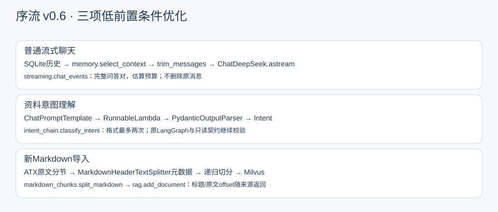

工作目录 /Users/zz/Desktop/A4G；2026-11-16。打开工作台 · 更新与验证报告 · 手册

memory.select_context负责SQL归属过滤、完整问答构建和预算裁剪；streaming.chat_events仅写一次消息并传入模型。graph.parse_intent调用intent_chain.classify_intent，格式失败最多补试一次；服务错误直接返回。markdown_chunks.split_markdown保留原文切片，用课程标题切分器提供metadata，rag.add_document发布来源及索引。TXT/PDF、MinIO/Milvus与只读TaskContract沿用v0.5。
| 路径 | 函数 | 行号 |
|---|---|---|
| src/backend/app/memory.py | estimate | 8 |
| src/backend/app/memory.py | select_context | 11 |
| src/backend/app/markdown_chunks.py | split_markdown | 7 |
| src/backend/app/streaming.py | encode | 18 |
| src/backend/app/streaming.py | chat_events | 20 |
| src/backend/app/streaming.py | build_stream_router | 60 |
| src/backend/app/rag.py | embed | 24 |
| src/backend/app/rag.py | chunk | 39 |
| src/backend/app/rag.py | _documents | 41 |
| src/backend/app/rag.py | publish_knowledge | 53 |
| src/backend/app/rag.py | add_document | 76 |
| src/backend/app/rag.py | vector_store_label | 96 |
| src/backend/app/rag.py | search | 99 |
| src/backend/app/upstream/intent_chain.py | classify_intent | 10 |
| src/backend/app/upstream/graph.py | parse_intent | 11 |
| src/backend/app/upstream/graph.py | confirm_entities | 29 |
| src/backend/app/upstream/graph.py | collect_missing_fields | 38 |
| src/backend/app/upstream/graph.py | retrieve_evidence | 50 |
| src/backend/app/upstream/graph.py | clarify | 57 |
| src/backend/app/upstream/graph.py | compose_response | 60 |
| src/backend/app/upstream/graph.py | finalize_contract | 82 |
| src/backend/app/upstream/graph.py | build_upstream_graph | 93 |